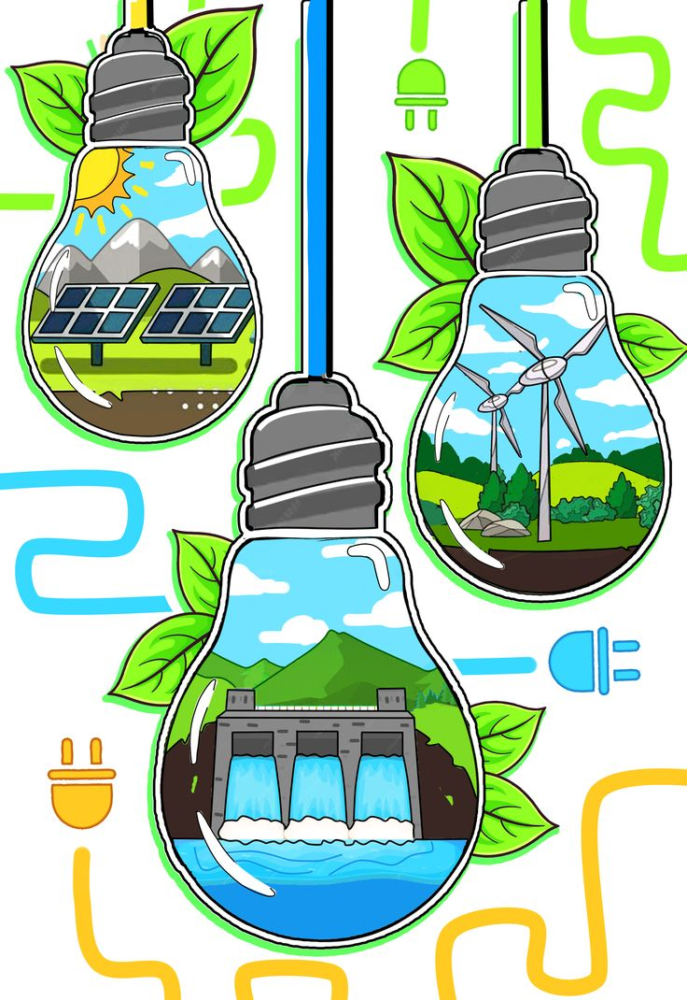
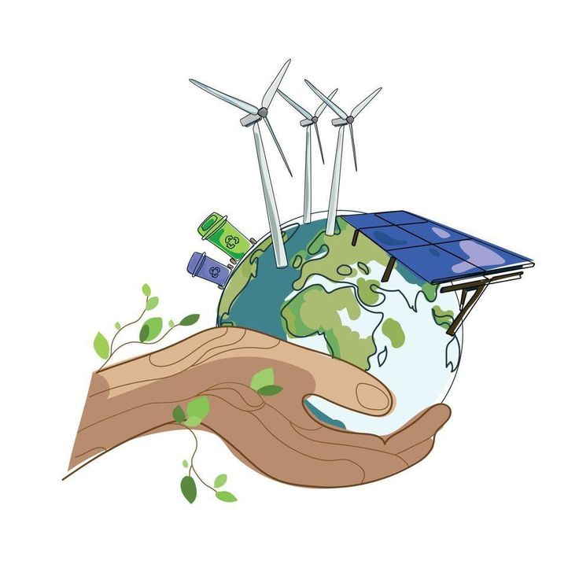
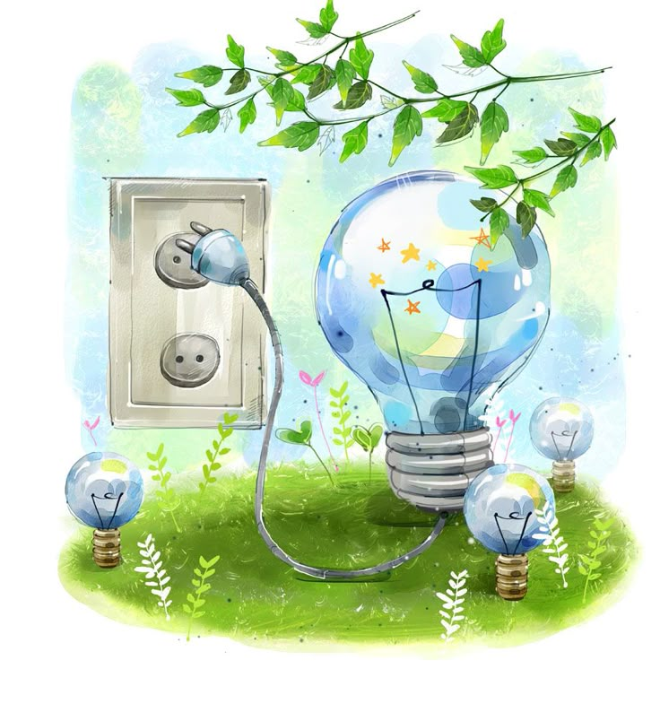
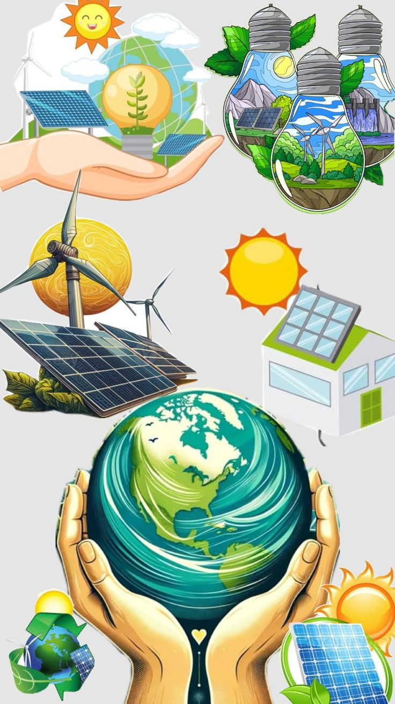

🔍 energía sustentable:
La energía sustentable es aquella que satisface las necesidades energéticas del presente sin comprometer la capacidad de las futuras generaciones para satisfacer las suyas. Es un concepto clave dentro del desarrollo sostenible, ya que busca equilibrar el uso de recursos naturales con la protección del medio ambiente y el bienestar social a largo plazo.
⚡ Características principales:
- Renovable: proviene de fuentes que se regeneran naturalmente, como el sol, el viento, el agua o la biomasa.
- Bajo impacto ambiental: genera mínimas emisiones contaminantes y no agota los recursos del planeta.
- Eficiente: promueve el uso racional de la energía, reduciendo pérdidas y optimizando el consumo.
- Equitativa: busca garantizar el acceso universal a la energía, especialmente en comunidades vulnerables.
🧠 energía eólica:
La energía eólica aprovecha la fuerza del viento para generar electricidad mediante aerogeneradores. Es una fuente limpia, renovable y cada vez más eficiente gracias a sistemas inteligentes que ajustan su funcionamiento según las condiciones climáticas.
✅ Ventajas:
- No contamina ni emite gases de efecto invernadero.
- Es inagotable y reduce la dependencia de combustibles fósiles.
- Puede instalarse en zonas rurales o aisladas.
⚠ Desventajas:
- Depende de la intensidad y constancia del viento.
- Puede afectar visualmente el paisaje.
- Requiere inversión inicial alta y mantenimiento técnico.

🌍 energía hidroeléctrica:
La energía hidroeléctrica se obtiene del movimiento del agua, especialmente en ríos y embalses. Es una fuente confiable que permite generar grandes cantidades de electricidad de forma limpia.
💧 ¿Cómo funciona?
- Se construyen presas que almacenan agua en altura.
- Al liberar el agua, esta cae por gravedad y pasa por turbinas hidráulicas.
- Las turbinas convierten la energía del agua en energía mecánica, que luego se transforma en energía eléctrica mediante generadores.
✅ Ventajas:
- No emite gases contaminantes.
- Es constante y confiable.
- Puede almacenar energía para usarla cuando se necesite.
⚠ Desventajas:
- Impacto ambiental en ecosistemas acuáticos.
- Desplazamiento de comunidades por construcción de presas.
- Requiere grandes inversiones y estudios geográficos.

📘 Información general:
Las energías renovables inteligentes combinan fuentes limpias como la solar, eólica o hidráulica con tecnologías avanzadas de automatización, sensores y redes eléctricas adaptativas. Este enfoque permite una gestión eficiente, autónoma y sostenible del consumo energético en hogares, industrias y comunidades.
🌐 Su objetivo es transformar el modelo energético tradicional en uno más justo, descentralizado y resiliente, reduciendo emisiones y democratizando el acceso a la energía.

🚀 Avances actuales:
En 2025, las energías renovables inteligentes han integrado tecnologías como:
- Inteligencia Artificial (IA) para predecir demanda y ajustar producción en tiempo real.
- Celdas solares de perovskita cuántica, con eficiencia récord y mayor estabilidad.
- Redes inteligentes (Smart Grids) que distribuyen energía según consumo real y priorizan fuentes limpias.
- Almacenamiento avanzado con baterías de litio y sodio que permiten autonomía energética en zonas rurales.
Estos avances están reduciendo costos, mejorando la eficiencia y acelerando la transición energética global.

🔮 Avances a futuro:
Para 2030, se proyecta una revolución energética basada en:
- Electrotecnología: automatización total del uso energético en hogares, vehículos y ciudades.
- Integración de blockchain para trazabilidad y transparencia en redes eléctricas.
- Baterías inteligentes que equilibran la red y almacenan excedentes sin pérdidas.
- Transición global sin combustibles fósiles, impulsada por eficiencia económica y conciencia ambiental.
El futuro de las energías renovables será más conectado, descentralizado y accesible para todos.